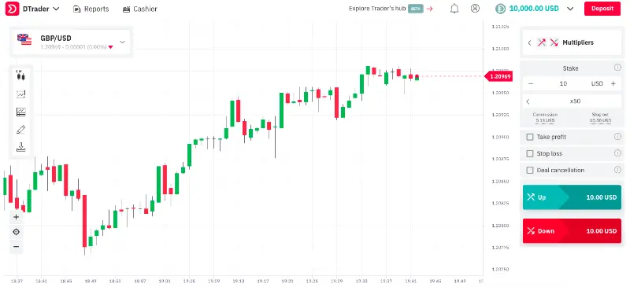
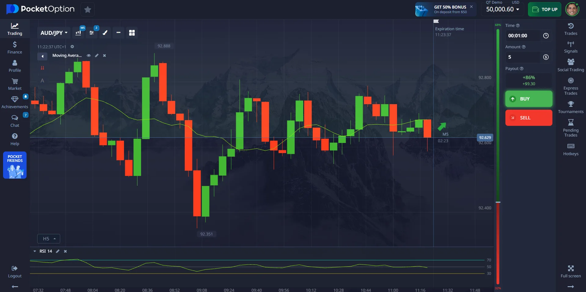
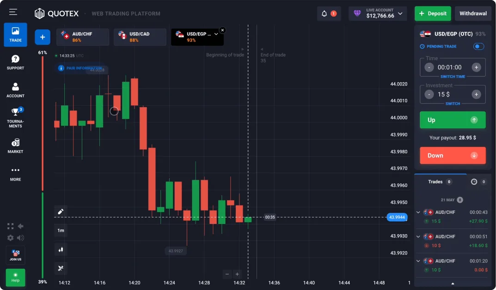
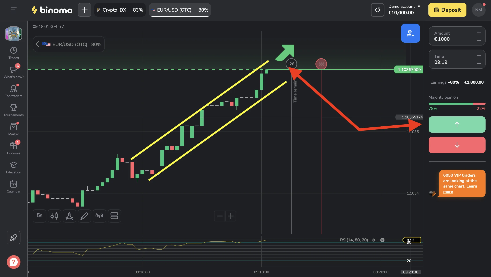
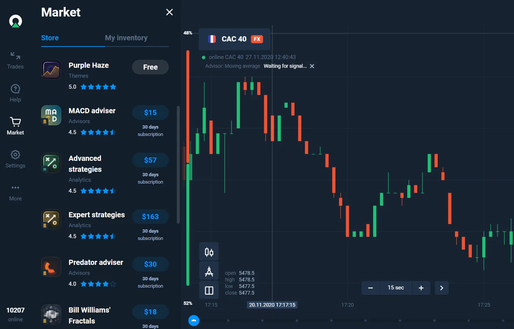
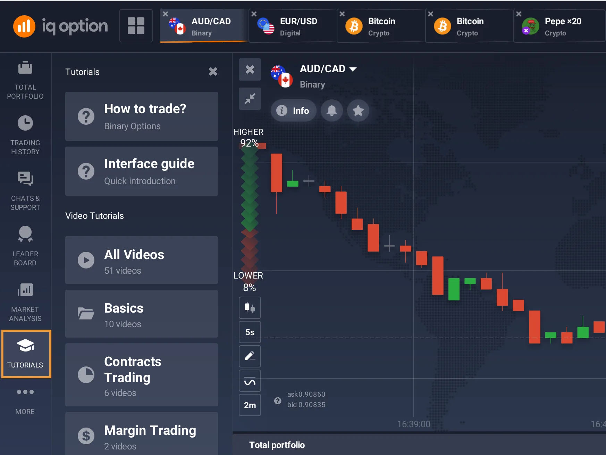

Traderoom and client apps
A ExpertOption-style user journey with signup, demo and real accounts, wallet, order history, web traderoom, iOS/Android apps and PWA.
Launch a white-label brokerage platform inspired by ExpertOption: traderoom, CRM, payments, KYC/AML, dealing controls, affiliate tools, apps and reporting under your own brand, domain and legal setup.






Use ExpertOption as a functional reference for an independent white-label platform: client apps, backoffice, payments, KYC/AML, dealing, affiliates and reporting under your own brand.
A ExpertOption-style user journey with signup, demo and real accounts, wallet, order history, web traderoom, iOS/Android apps and PWA.
CRM, user cards, finance view, permissions, support workflows, tickets and sales triggers in one operating layer.
PSPs, local payment methods, KYC/AML, antifraud, dealing controls, limits, spreads, commissions and audit logs.
CPA, revenue share, spread share, lot offers, trading history, in/out summary and reports for management decisions.
The final scope depends on market, licensing, PSPs and legal review, but the base covers the modules a white-label operation usually needs to launch and scale.
We use ExpertOption as a functional reference to define flows, modules and release priorities, then turn it into an independent white-label platform with your brand, domain, PSPs, risk rules and operating setup.
Choose the ExpertOption-style user flows: signup, demo account, real account, wallet, traderoom, deposits, withdrawals and support.
Separate what must launch first from later improvements: web traderoom, CRM, PSPs, KYC/AML, dealing controls, affiliates and reports.
Configure payment methods, KYC providers, quotes, liquidity, risk limits, fraud rules, commissions, spreads and admin roles.
Run QA on trading flows, billing, documents, notifications, mobile behavior, audit logs and reporting before opening traffic.
We map which broker-style flows make sense for your market: traderoom, instruments, apps, wallet, KYC, payments, CRM and affiliates.
We turn the reference into your own experience: brand, domain, copy, UI, permissions, languages, onboarding, demo and real accounts.
We connect PSPs, KYC providers, dealing rules, antifraud, limits, commissions, spreads, audit trails and reporting.
We validate signup, KYC, deposit, trading, withdrawal, mobile, performance, logs and operational flows before launch.
No. Arcos Online is independent and is not affiliated with, endorsed by or authorized by ExpertOption. The name is used only to describe a product reference.
Yes, the scope can include similar functional flows such as traderoom, wallet, demo and real accounts, mobile apps, CRM, payments, dealing controls, KYC/AML, affiliates and reporting. The final UI, brand and legal setup must be yours.
The platform can include web traderoom, desktop, iOS/Android apps and PWA depending on scope, budget and release priority.
Yes. Billing can support card methods, local methods such as Pix, crypto flows such as Bitcoin and integrations with PSPs. KYC/AML can be connected to providers such as Veriff, Shufti Pro or Sumsub, subject to availability and review.
Licensing, legal entity, jurisdiction rules, commercial communication, client eligibility, risk disclosure, payment approval and ongoing compliance remain the operator's responsibility.
Yes. The same white-label architecture can be adapted to different reference flows. The reference helps define product behavior; it does not mean copying brand assets or protected UI.
Send target regions, commercial model, PSPs, languages, apps and desired modules. We will separate MVP, critical integrations and future improvements.